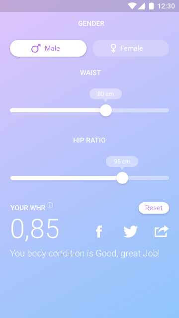

WHR Calculator
Waist–hip ratio or waist-to-hip ratio (WHR) is the ratio of the circumference of the waist to that of the hips. This is calculated as waist measurement divided by hip measurement (W ÷ H). For example, a person with a 25″ (64 cm) waist and 38″ (97 cm) hips has a waist–hip ratio of about 0.66.
The WHR has been used as an indicator or measure of health, and the risk of developing serious health conditions. WHR correlates with fertility (with different optimal values for males and females).
(wikipedia)